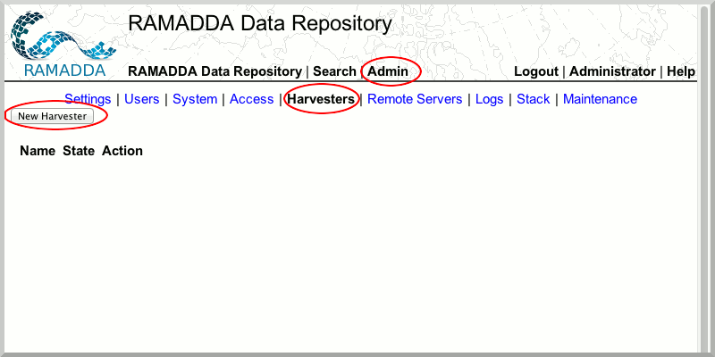
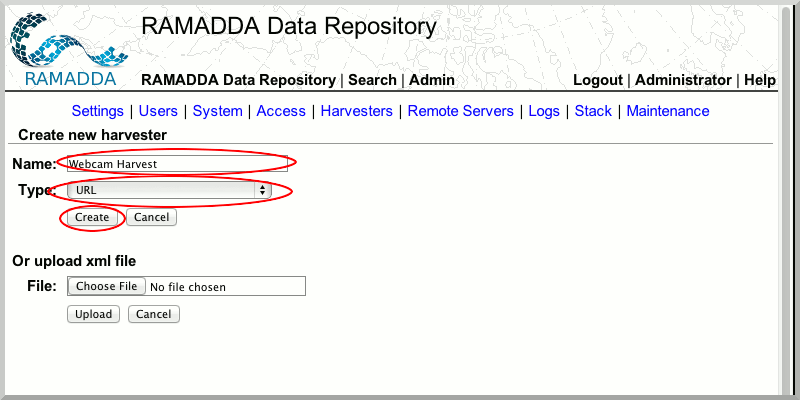
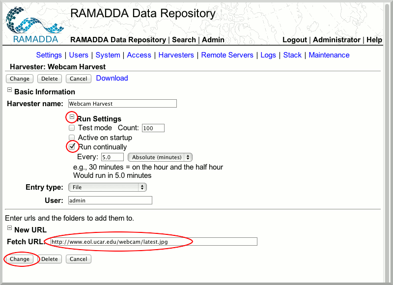
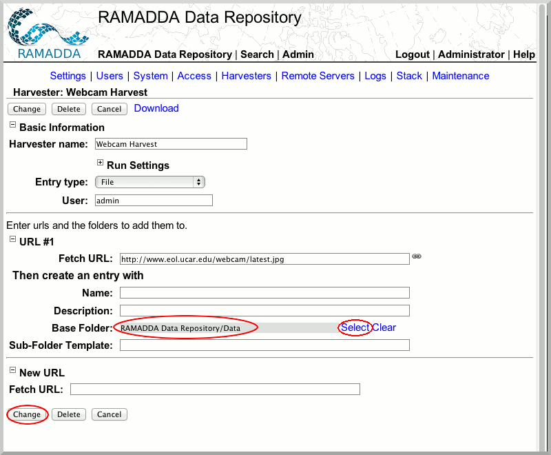
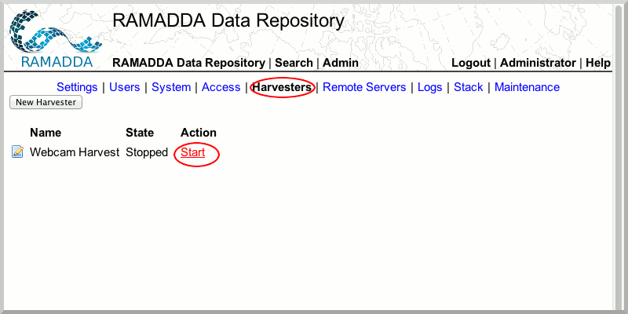
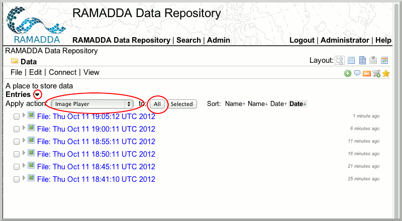

Harvest Data
RAMADDA's harvesting capability allows RAMADDA administrators to automatically capture content from local or remote resources into RAMADDA on a scheduled basis. In this exercise, we will learn how to collect images from a webcam into RAMADDA.
- Login to RAMADDA with your admin account. (You may have to logout from your current session first.)
- Go to the "Harvesters" section of the "Admin" tab and click the "New Harvester" button.

- Create a new "WebCam Harvest" harvester of type "URL".

- Open the "Run Settings" node, check "Run continually". In the Fetch URL section, enter the URL
https://www.eol.ucar.edu/webcam/latest.jpg and click the "Change" button.

- In the "Base Folder" area choose the location where your harvested image will be stored. Select the "Data" folder.

- Go to the "Harvesters" section of the "Admin" tab and "Start" the harvester.

- Navigate to the RAMADDA Data folder. There should be at least one image. In a few minutes you will see a number of images in this area.
- To play the image collection as a movie, open the "Entries" node, and choose the "Image Player" action. Select "All" images. A movie player will appear where you can play the image selection as a movie.
